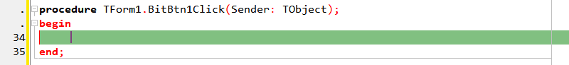
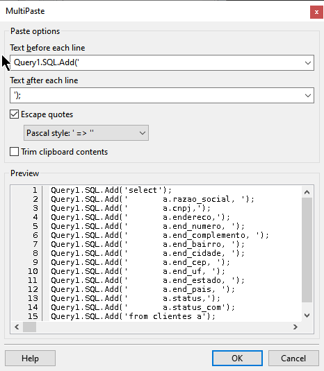

Introdução ao Multi Paste
Muitos ficam tanto tempo com uma IDE que não se importam mais em saber as novidades que ela possui a cada versão nova. Isso é um erro porque ao descobrir uma novidade, se pergunta "por que não a conheci antes?".
Essa é a impressão causada em alguns quando descobrem a função Multi Paste. Muitas vezes procuramos na IDE a função chamada de column mode ou search/replace porque "colamos" (Ctrl+V) textos e desejamos depois acrescentar algo à direita e/ou à esquerda dele. O Multi paste é um jeito superior para resolver este tipo de situação, atuando como um "colar" personalizado.
Exemplo Prático: Adaptando Queries
Imagine que você tenha a seguinte query na sua área de clipboard e precise adaptá-la para Pascal:
select a.razao_social, a.cnpj, a.endereco, a.end_numero, a.end_complemento, a.end_bairro, a.end_cidade, a.end_cep, a.end_uf, a.end_estado, a.end_pais, a.status, a.status_com from clientes a where a.razao_social like 'a%'
O objetivo é transformar cada linha em um comando Query1.SQL.Add('');. Veja como o Multi Paste simplifica o processo:
- Copie a query desejada para o clipboard.
- Posicione o cursor onde deseja realizar a colagem.
- Acesse o menu Edit | Multi paste.
- Em Text before each line, insira:
Query1.SQL.Add('. - Em Text after each line, insira:
');. - Desmarque a opção Trim clipboards contents para preservar a indentação original.


Vídeo Tutorial
Assista abaixo à demonstração completa da ferramenta em funcionamento:
Produtividade com a IDE Lazarus: Multi Paste, como usar
ASSISTIR VÍDEO NO YOUTUBEDownload e Sincronização
Acesso Offline: Para manter este guia em seu ambiente local:
Conclusão
O Multi Paste é uma ferramenta de produtividade ampla e poderosa. Ela elimina a necessidade de edições manuais repetitivas e garante que blocos complexos de texto (como XML, JSON ou SQL) sejam transportados para dentro do seu código Pascal com perfeição. Aproveite esse recurso para acelerar seu fluxo de trabalho.